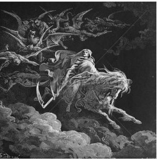
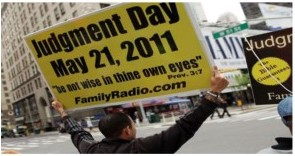

How do we know a false prophet?
‘When a prophet speaketh in the name of the LORD, if the thing follow not, nor come to pass, that is the thing which the LORD hath not spoken, but the prophet hath spoken it presumptuously: thou shalt not be afraid of him.’ (Deu 18:22)
Obviously all those who have hitherto predicted the end of the world have been wrong, and are therefore, by the biblical definition, false prophets. It’s an impressive list. Notice how much more frequent they have become recently. The date given is that of the predicted End.
~50 CE Jesus “And he said unto them, Verily I say unto you, That there be some of them that stand here, which shall not taste of death, till they have seen the kingdom of God come with power.” (Mark 9:1)
66-70 Simon bar Giora The Jewish Essene sect of ascetics saw the Jewish revolt against the Romans in 66-70 in Judea as the final end-time battle which would bring about the arrival of the Messiah. By the authority of High Priest Simon, coins were minted declaring the redemption of Israel.
365 Hilary of Poitiers French bishop
375-400 Martin of Tours French bishop, "There is no doubt that the Antichrist has already been born. Firmly established already in his early years, he will, after reaching maturity, achieve supreme power."
500 Hippolytus of Rome, Sextus Julius Africanus (1/2), and Irenaeus One of the predictions was based on the dimensions of Noah's ark
793 Apr 6 Beatus of Liébana Spanish monk
800 Sextus Julius Africanus (2/2) When 500 flopped, he revised it to 800.
799-806 Gregory of Tours French bishop.
848 Thiota
995 Various Christians In 992, Good Friday coincided with the Feast of the Annunciation; this had long been believed to be the event that would bring forth the Antichrist, and thus the end-times, within 3 years
1000 Jan 1 Pope Sylvester II Various Christian clerics predicted the end of the world on this date, including Pope Sylvester II. Riots occurred in Europe and pilgrims headed east to Jerusalem
1033 Various Christians When January 1, 1000 failed, some theorists proposed that the end would occur 1000 years after Jesus' death, instead of his birth.
1260 Joachim of Fiore (1/3) Italian mystic
1284 Pope Innocent III (d. 1216) 666 years after the rise of Islam
1290 1335 Joachimites (2/3, 3/3) When 1260 failed, followers rescheduled the end to 1290 and then again to 1335
1346-1351 Various Europeans The black plague spreading across Europe was interpreted by many as the sign of the end of times.
1370 Jean de Roquetaillade The Antichrist was to come in 1366 and the Millennium would begin either in 1368 or 1370.
1378 Arnaldus de Villa Nova (3/3) This Joachimite wrote that the Antichrist was to come this year.
1504 Sandro Botticelli believed he was living during the Tribulation, and that the Millennium would begin three and a half years from 1500. He also wrote into his painting The Mystical Nativity that the Devil was loose and would soon be chained
1524 Feb 1 London astrologers (1/2) predicted the world would end by a flood starting in London. 20,000 Londoners left their homes and headed for higher ground in anticipation.
1524 Feb 20 Johannes Stöffler (1/2) A planetary alignment in Pisces was seen by this astrologer as a sign of the Millennium.
1524-1526 Thomas Müntzer Anabaptist. His followers were killed by cannon fire in a battle with government troops. He died under torture and was beheaded
1528 May 27 Hans Hut
1528 Johannes Stöffler (2/2) revised after his 1524 prediction failed.
1533 Oct 19 8:00 Michael Stifel Mathematician
1533 Melchior Hoffman Anabaptist prophet predicted Christ's Second Coming to take place this year in Strasbourg
1534 Apr 5 Jan Matthys Only the city of Münster would be spared.
1555 Pierre d'Ailly French theologian wrote in 1400 that 6845 years of human history had already passed, and the end would be in the 7000th year.
1585 Michael Servetus In The Restoration of Christianity, this Spanish born reformer claimed that the Devil's reign in this world had started in 325 AD, at the Council of Nicea, and would last for 1260 years, thus ending in 1585.
1588 Regiomontanus
1600 Martin Luther
1624 Feb 1 London astrologers (2/2) When 1524 failed, they recalculated the date to February 1, 1624
1648 Sabbatai Zevi (1/2) Using the kabbalah, this rabbi from Smyrna, Turkey, proclaimed that the Messiah would come during this year.
1651 Unknown author from Lübeck, Germany publishes Apocalypse maps telling of an Antichrist, the rise of Islam and other events following Judgment Day that was predicted to occur in 1651.
1654 Helisaeus Roeslin made his prediction based on a super-nova in 1572
1657 Fifth Monarchists Radical Christians predicted Armageddon and the destruction of the Antichrist
1658 Christopher Columbus In Book of Prophecies (1501), Columbus claimed that the world was created in 5343 BC, and would last 7000 years.
1660 Joseph Mede claimed that the Antichrist had appeared in 456, and the end would come in 1660.
1660 Sabbatai Zevi (2/2) After 1648 failed, he recalculated the end of the Earth.
1666 Fifth Monarchists (1/2) The presence of 666 in the date, the death of 100,000 Londoners to bubonic plague, and the Great Fire of London led to superstitious fears of the end of the world.
1673 William Aspinwall (1/2) Fifth Monarchist
1688 John Napier (1/2) based on the Book of Revelation.
1689 Pierre Jurieu
1689 John Mason Anglican priest
1694 Johann Jacob Zimmermann
1697 Cotton Mather (1/3) Puritan minister
1700 John Napier (2/2) After 1688 failure
1700 Henry Archer In The Personall Reigne of Christ Upon Earth
1705-1708 Camisard
1716 Cotton Mather (2/3)
1719 Apr 5 Jacob Bernoulli predicts a comet will destroy the Earth
1700-1734 Nicholas of Cusa Cardinal
1736 Oct 16 William Whiston predicted a comet colliding with Earth.
1736 Cotton Mather (3/3)
1757 Emanuel Swedenborg
1780 May 19 Connecticut General Assembly the sky turned dark
1789 Pierre d'Ailly 14th-century Cardinal.
1792-1794 Shakers
1793-1795 Richard Brothers retired sailor, later entered an insane asylum.
1795 Nov 19 Nathaniel Brassey Halhed, campaiging for Richard Brothers' release from the insane asylum, proclaims the end
1805 Christopher Love Presbyterian minister
1806 Mary Bateman In Leeds, England in 1806, a hen began laying eggs on which the phrase "Christ is coming" was written (a hoax). She had written on the eggs in a corrosive ink, and reinserted the eggs back into the hen's oviduct.
1814 Oct 19 Joanna Southcott 64-year-old self-described prophet claimed she was pregnant with the Christ child, and that he would be born on Oct 19, 1814. She died later that year, and an autopsy proved she had not been pregnant.
1836 Johann Albrecht Bengel based on a careful study of the prophecies of the Bible, Judgment Day would come in 1836, with the Pope as the anti-Christ and the Freemasons as the "false prophet" of Revelations.
1836 John Wesley, founder of the Methodist Church
1843 Millerites (1/3) Although not officially endorsed, many Millerites expected the Second Coming to occur on April 28 or at the end of 1843.
1843 Harriet Livermore (1/2)
1844 Mar 21 William Miller (2/3) leader of the Millerites
1844 Oct 22 Millerites (3/3) miscalculated Scripture, the Great Disappointment. The Millerites then became the Seventh Day Adventists.
1847 Aug 7 George Rapp, founder of the Harmony Society
1847 Harriet Livermore (2/2)
1853-1856 Various Many thought the Crimean War was Armageddon.
1862 John Cumming Scottish clergyman: 6000 years since Creation
1862 Joseph Morris English convert to Mormonism has revelations
1863 John Wroe founder of the Christian Israelite Church
1873 Jonas Wendell In The Present Truth, or Meat in Due Season
1874 Charles Taze Russell (1/2) founder of the Bible Student Movement, later Jehovah’s Witnesses, says Jesus returned in invisible form
1890 Wovoka founder of the Ghost Dance movement
1901 Catholic Apostolic Church
1910 Camille Flammarion Halley's Comet "will snuff out all life on the planet," "Comet pills" are sold to protect against toxic gases.
1892-1911 Charles Piazzi Smyth, pyramidologist, based on the Pyramid of Giza
1875-1925 Wilford Woodruff President of the Mormon Church
1881 Mother Shipton found a 15th-century prophecy in a book, proven to be a forgery; yet some people still expect the end.
1914 Charles Taze Russell (2/2) “Battle of the great day of God Almighty… begun in October, 1874."
1915 John Chilembwe Baptist educator and leader of a rebellion in the British protectorate of Nyasaland
1918 International Bible Students Association (1/2) "Christendom shall be cut off and glorification of the Little Flock (The Church)"
1920 International Bible Students Association (2/2) God would "destroy the churches wholesale and the church members by the millions."
1925 Feb 13 Margaret Rowen Seventh-Day Adventist, the angel Gabriel told her that the world would end at midnight on this date.
1926 Spencer Perceval Son of the former Prime Minister of Britain and one of the 12 Apostles of the Catholic Apostolic Church due to rampant immorality
1935 Sep Wilbur Glenn Voliva evangelist
1936 Herbert W. Armstrong (1/4) founder of the Worldwide Church of God
1941 Jehovah's Witnesses a group from the Bible Student movement
1943 Herbert W. Armstrong (2/4)
1947 John Ballou Newbrough author of Oahspe: A New Bible
1954 Dec 21 Dorothy Martin leader of a UFO cult called Brotherhood of the Seven Rays. Their failure inspired the 1956 book When Prophecy Fails.
1959 Apr 22 Florence Houteff 2nd Prophet of the Branch Davidians. The failure led to the split of the sect into several subsects
1962 Feb 4 Jeane Dixon (1/2), various Indian astrologers due to a planetary alignment
1967 Aug 20 George Van Tassel UFO prophet, channeled an alien named Ashtar: the southeastern US would be destroyed by a Soviet nuclear attack.
1967 Jim Jones founder of the People's Temple: nuclear holocaust
1969 Aug 9 George Williams founder of the Church of the Firstborn
1969 Charles Manson apocalyptic race war (RaHoWa - Racial Holy War)
1972 Herbert W. Armstrong (3/4)
1974 Jan David Berg, leader of Children of God, due to Comet Kohoutek
1974 Jan Herbert W. Armstrong (4/4)
1975 Jehovah's Witnesses
1976 Brahma Kumaris Nuclear or civil wars and the sinking of all continents except India
1977 John Wroe founder of the Christian Israelite Church
1977 William M. Branham Christian minister
1980 Leland Jensen nuclear disaster
1981 Chuck Smith founder of Calvary Chapel
1982 Apr-Jun Tara Centers "Christ is Here!" and will reveal himself "within the next two months".
1982 Mar 10 John Gribbin/Stephen Plagemann Aligned planets create earthquake on San Andreas Fault
1982 Jun 21 Benjamin Creme Maitreya announcing it on worldwide television.
1982 Pat Robertson in 1976 on his 700 Club TV show
1985 Lester Sumrall minister writes I Predict 1985
1986 Apr 29 Leland Jensen Halley's Comet will be pulled into Earth's orbit
1987 Aug 17 José Argüelles unless 144,000 people gather across the world and "resonate in harmony"
1988 Sep 13, Oct 3 Edgar C. Whisenant (1/2) 88 Reasons Why the Rapture Could Be in 1988M
1989 Sep 30 Edgar C. Whisenant (2/2)
1990 Apr 23 Elizabeth Clare Prophet: nuclear war
1991 Sep 9 Menachem Mendel Schneerson Russian-born rabbi
1991 Louis Farrakhan leader of the Nation of Islam: Gulf War is Armageddon
1992 Sep 28 Rollen Stewart born-again Christian
1992 Oct 28 Lee Jang Rim Lee leader of the Dami Mission
1993 David Berg
1994 May 2 Neal Chase Bahá'í leader: New York destroyed by a nuclear bomb
1994 Sep 6, Sep 29, Oct 2 Harold Camping (1-3/6)
1995 Mar 31 Harold Camping (4/6)
1996 Dec 17 Sheldan Nidle arrival of 16 million space ships and angels.
1997 Mar 26 Marshall Applewhite, leader of the Heaven's Gate cult, claimed that a spacecraft was trailing the Comet Hale-Bopp and argued that suicide was "the only way to evacuate this Earth" so that the cult members' souls could board the supposed craft and be taken to another "level of existence above human." Applewhite and 38 of his followers committed mass suicide.
1997 Aug 10 Aggai 1st-century bishop of Edessa
1997 Oct 23 James Ussher 17th-century Irish archbishop: 6000 years since Creation
1998 Mar 31 Hon-Ming Chen (1/2) (陳恆明), leader of the Taiwanese cult God's Salvation Church: God will come to Earth in a flying saucer at 10:00 am on this date and appear on Channel 18 on every TV set in the US.
1999 Jul Nostradamus the King of Terror will come from the sky in "1999 and seven months"
1999 Aug 18 The Amazing Criswell psychic
1999 Sep 11 Philip Berg, dean of the worldwide Kabbalah Centre
1999 Charles Berlitz nuclear devastation, asteroid impact, or polar inversion.
1999 Hon-Ming Chen (2/2) nuclear holocaust will destroy Europe and Asia
1999 James Gordon Lindsay preacher
1999 Timothy Dwight IV, President of Yale University
1999 Nazim Al-Haqqani
2000 Jan 1 Credonia Mwerinde and Joseph Kibweteere after the prediction fails, 778 followers of this Ugandan religious movement die in a fire and poisonings/killings - group suicide or mass murder?
2000 Jan 1 Jerry Falwell
2000 Jan 1 Tim LaHaye and Jerry B. Jenkins: Y2K bug would trigger chaos
2000 Apr 6 James Harmston leader of the True and Living Church of Jesus Christ of Saints of the Last Days
2000 May 5 Nuwaubian Nation star holocaust will pulling planets into the sun
2000 Peter Olivi This 13th-century theologian
2000 Isaac Newton Observations upon the Prophecies of Daniel, and the Apocalypse of St. John.
2000 Jonathan Edwards 18th-century preacher
2001 Tynnetta Muhammad columnist for the Nation of Islam
2003 May 27 Nancy Lieder aliens from the Zeta Reticuli star system told her through a brain implant of a planet which would enter our solar system and cause a pole shift on Earth that would destroy most of humanity
2000 Sun Myung Moon founder of the Unification Church
2000 Ed Dobson pastor The End: Why Jesus Could Return by A.D. 2000
2000 Ruth Montgomery Earth's axis will shift
2000 Edgar Cayce
2000 Lester Sumrall minister I Predict 2000
2003 Nov 29 Aum Shinrikyo: nuclear war
2006 Sep 12 House of Yahweh: nuclear war
2007 Apr 29 Pat Robertson 1990 book The New Millennium
2010 Hermetic Order of the Golden Dawn
2011 May 21 Harold Camping (5/6)
2011 Sep 29 Ronald Weinland (1/2) nuclear explosions in U.S. port cities
2011 Oct 21 Harold Camping (6/6) on May 21, a "Spiritual Judgment" took place, and the Rapture and the end of the world would occur on October 21
2011 Aug-Oct Various Comet Elenin travelling almost directly between Earth and the Sun would cause disturbances to the Earth's crust, causing massive earthquakes and tidal waves.
2012 May 27 Ronald Weinland (2/2)
2012 Jun 30 José Luis de Jesús governments will fail on this day, but his followers will be able to fly and walk through walls
2012 Dec 21 Various people: end of the 13th Mayan age known as b'ak'tun, misrepresent Maya history and culture. Scientists from NASA, along with expert archeologists, state that none of the feared events were possible.
2013 Aug 23 Grigori Rasputin Russian mystic and spiritual adviser to Tsar Nicolas II
2014 Apr - 2015 Sep John Hagee and Mark Biltz The Blood Moon Prophecy, the tetrad in 2014 and 2015 may represent prophecies in the Bible
2016 Jul 29 End Time Prophecies viral video on YouTube: "polar flip" will cause the Earth's atmosphere to be pulled to the ground
2017 May 13 Horacio Villegas: nuclear war on May 13, 2017, hundred-year anniversary of the visitation of Our Lady of Fátima
2020 Jeane Dixon (2/2)
~~~~~~~